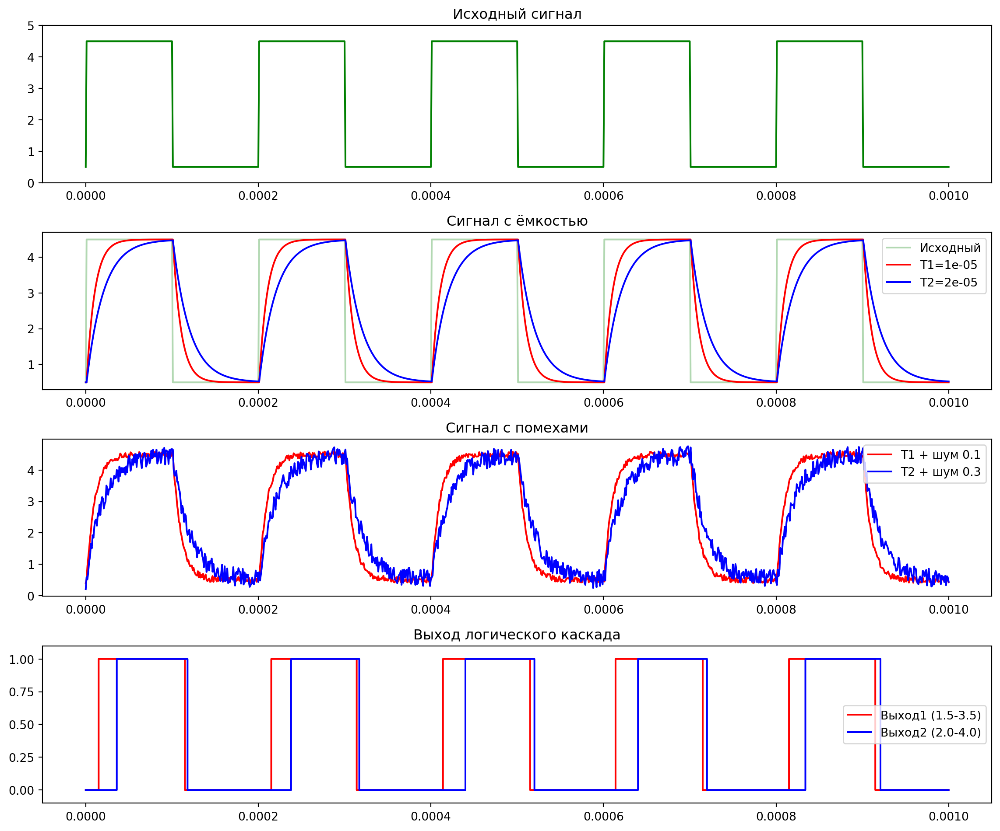
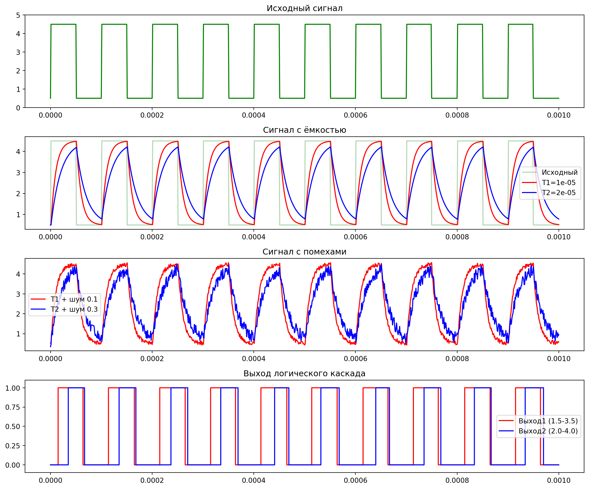

import numpy as np
import matplotlib.pyplot as plt
# Параметры
t_s = 1e-3 # Время моделирования (1 мс)
h = 1e-6 # Шаг времени (1 мкс)
t = np.arange(0, t_s, h) # Временная сетка
# Генерация прямоугольных импульсов (0.5 В и 4.5 В)
def generate_signal(frequency):
signal = 0.5 + 4 * (np.sin(2 * np.pi * frequency * t) > 0)
return signal
# Моделирование ёмкостной составляющей
def simulate_capacitance(signal, T, U0=0.5):
U = np.zeros_like(signal)
U[0] = U0 # Начальное условие
for n in range(len(signal) - 1):
U[n + 1] = U[n] + h * (signal[n] - U[n]) / T
return U
# Добавление помех
def add_noise(signal, amplitude):
noise = amplitude * (2 * np.random.rand(len(signal)) - 1)
return signal + noise
# Логический каскад с гистерезисом
def logic_cascade(U, Umin, Umax, initial=0):
output = np.zeros_like(U)
output[0] = initial
for n in range(1, len(U)):
if output[n - 1] == 0:
output[n] = 1 if U[n] > Umax else 0
else:
output[n] = 0 if U[n] < Umin else 1
return output
# Частоты сигналов и параметры
frequencies = [5000, 10000]
T1, T2 = 1e-5, 2e-5
Umin1, Umax1 = 1.5, 3.5
Umin2, Umax2 = 2.0, 4.0
A1, A2 = 0.1, 0.3
# Визуализация для каждой частоты
for freq in frequencies:
Y = generate_signal(freq)
# Моделирование ёмкостной составляющей (без помех)
U1 = simulate_capacitance(Y, T1)
U2 = simulate_capacitance(Y, T2)
# Добавление помех
U1_noise = add_noise(U1, A1)
U2_noise = add_noise(U2, A2)
# Логический каскад
output1 = logic_cascade(U1_noise, Umin1, Umax1)
output2 = logic_cascade(U2_noise, Umin2, Umax2)
# Построение графиков
plt.figure(figsize=(12, 10))
# График 1: Исходный сигнал
plt.subplot(4, 1, 1)
plt.plot(t, Y, 'g', label=f'Генератор {freq} Гц')
plt.title('Исходный сигнал')
plt.ylim(0, 5)
# График 2: Сигнал с ёмкостью (без помех)
plt.subplot(4, 1, 2)
plt.plot(t, Y, 'g', alpha=0.3, label='Исходный')
plt.plot(t, U1, 'r', label=f'T1={T1}')
plt.plot(t, U2, 'b', label=f'T2={T2}')
plt.title('Сигнал с ёмкостью')
plt.legend()
# График 3: Сигнал с ёмкостью и помехами
plt.subplot(4, 1, 3)
plt.plot(t, U1_noise, 'r', label=f'T1 + шум {A1}')
plt.plot(t, U2_noise, 'b', label=f'T2 + шум {A2}')
plt.title('Сигнал с помехами')
plt.legend()
# График 4: Выход логического каскада
plt.subplot(4, 1, 4)
plt.step(t, output1, 'r', where='post', label=f'Выход1 ({Umin1}-{Umax1})')
plt.step(t, output2, 'b', where='post', label=f'Выход2 ({Umin2}-{Umax2})')
plt.title('Выход логического каскада')
plt.ylim(-0.1, 1.1)
plt.legend()
plt.tight_layout()
plt.show()
